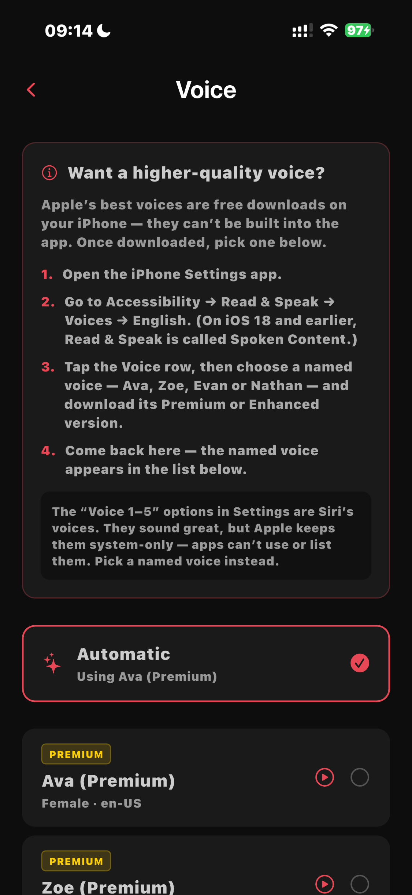
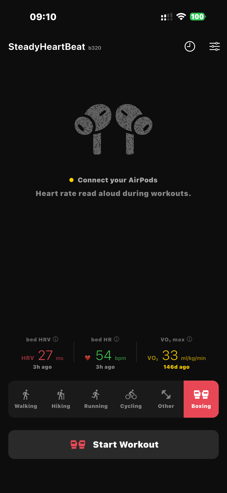
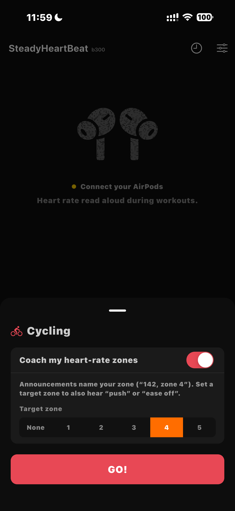
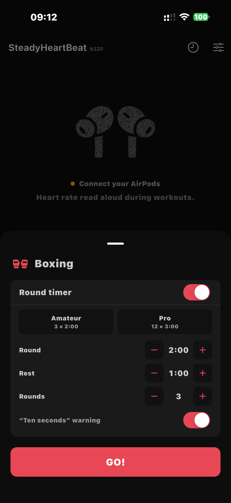
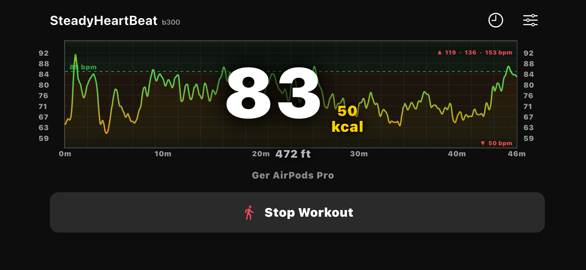
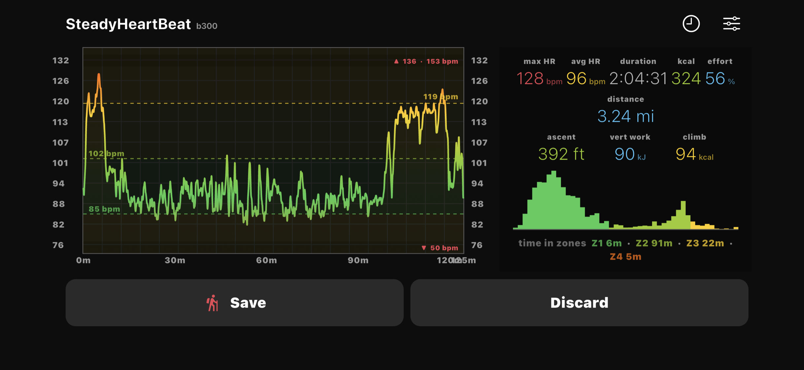
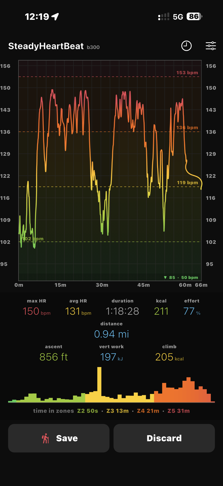
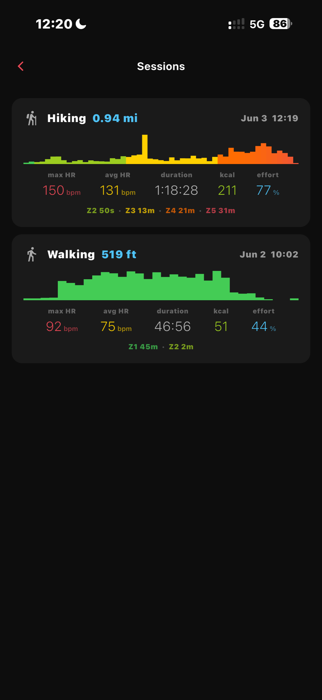
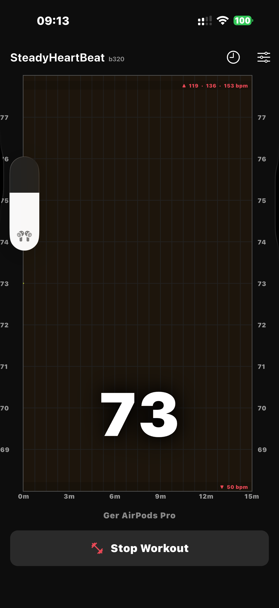
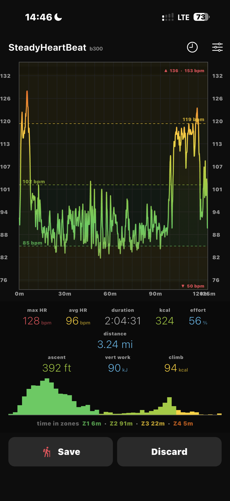

SteadyHeartBeat speaks your live heart rate from AirPods Pro 3 — no watch, no chest strap, no glancing at a screen. The earbuds are both the sensor and the feedback.
Everything runs on your iPhone. Your heart-rate data never leaves the device, and halfmarble never receives it.
A free public beta is available now on request — contact us to join.
Requires AirPods with heart-rate monitoring (AirPods Pro 3 or later) · iOS 26+
Heart-rate and health data never leave your iPhone. halfmarble never receives it — local-first by architecture, not by policy.
AirPods Pro 3 are both the optical sensor and the feedback channel. No smartwatch, no chest strap, hands and eyes free.
Your BPM, read aloud at the interval you choose — and the instant it drifts past your threshold.
Hear your training zone, and with a target set, a spoken "push" or "ease off" — five color-coded zones from recovery to maximum effort.
Amateur and pro presets, configurable rounds and rest, with rounds, rest, and a "ten seconds" warning called aloud.
Free at launch, with the earbud-as-closed-loop-sensor pipeline published as public-domain prior art so anyone can build on it.










SteadyHeartBeat processes everything on your iPhone. Session files are kept in the app's private storage and excluded from iCloud/iTunes backup. The one exception is Apple Health, which you control and can turn off.
Read the full breakdown in the privacy policy, or halfmarble's Glass Box data philosophy.
SteadyHeartBeat is a proof of concept for ambient, on-device biometric feedback through everyday earbuds — one building block in halfmarble's wearable-sensing work. Rather than patent the pipeline, we have placed it into the public domain as dated defensive publications, so the techniques stay freely practicable by anyone.
The prior art and source are public now: read the consumer-earbud closed-loop sensor and rest-gating defensive publications, or browse the source on GitHub.